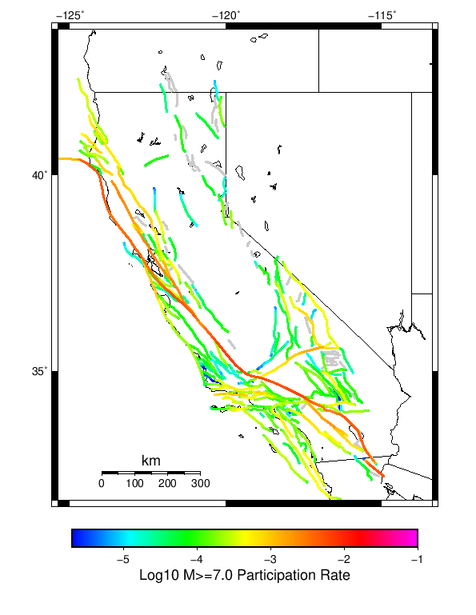

Start 2012, 500 yr, NoERT, Spontaneous, Historical Catalog Results
| Start 2012, 500 yr, NoERT, Spontaneous, Historical Catalog |
|---|
| Num Simulations | 870 (incomplete) |
| Start Time | 2012/01/01 00:00:00 UTC |
| Start Time Epoch Milliseconds | 1325376000000 |
| Duration | 500 Years |
| Includes Spontaneous? | true |
| Trigger Ruptures | (none) |
| Historical Ruptures | 60366 Trigger Ruptures |
| First: M7.3 at 1852/01/05 04:40:39 UTC |
| Last: M3.2 at 2011/12/31 19:14:44 UTC |
| Largest: M7.9 at 1857/01/09 16:25:39 UTC |
| Config Generated With | u3etas_config_builder.sh --start-year 2012 --num-simulations 1000 --duration-years 500 --prob-model NO_ERT --include-spontaneous --historical-catalog --scale-factor 1.0 --hpc-site USC_HPC --nodes 36 --hours 24 --queue scec |
Table Of Contents
Magnitude Frequency Distribution
(top)
Legend
- Mean (thick black line): mean annual rate across all 870 catalogs
- 2.5%,97.5% (thin black lines): annual rate percentiles across all 870 catalogs
- Median (thin blue line): median annual rate across all 870 catalogs
- Mode (thin cyan line): modal annual rate across all 870 catalogs (scaled to annualized value)
- 500 yr Probability (thin red line): 500 year probability calculated as the fraction of catalogs with at least 1 occurrence
- 500 yr Supraseismogenic Probability (thin dashed red line): same as above, but only for supraseismogenic ruptures on explicitly modeled UCERF3 faults
- 95% Conf (light red shaded region): binomial 95% confidence bounds on probability

| Mag | Mean | 2.5 %ile | 97.5 %ile | Median | Mode | 500 yr Probability | 500 yr Supra-Seis Prob |
|---|
| M≥5 | 7.925 | 7.196 | 8.716 | 7.912 | 8.260 | 1.000 (100.00%) | 1.000 (100.00%) |
| M≥5.1 | 6.277 | 5.686 | 6.954 | 6.262 | 6.384 | 1.000 (100.00%) | 1.000 (100.00%) |
| M≥5.2 | 4.969 | 4.480 | 5.494 | 4.956 | 4.908 | 1.000 (100.00%) | 1.000 (100.00%) |
| M≥5.3 | 3.932 | 3.524 | 4.376 | 3.922 | 3.752 | 1.000 (100.00%) | 1.000 (100.00%) |
| M≥5.4 | 3.107 | 2.782 | 3.448 | 3.102 | 3.036 | 1.000 (100.00%) | 1.000 (100.00%) |
| M≥5.5 | 2.452 | 2.198 | 2.726 | 2.452 | 2.484 | 1.000 (100.00%) | 1.000 (100.00%) |
| M≥5.6 | 1.934 | 1.724 | 2.154 | 1.934 | 1.880 | 1.000 (100.00%) | 1.000 (100.00%) |
| M≥5.7 | 1.521 | 1.342 | 1.698 | 1.516 | 1.502 | 1.000 (100.00%) | 1.000 (100.00%) |
| M≥5.8 | 1.191 | 1.056 | 1.338 | 1.190 | 1.218 | 1.000 (100.00%) | 1.000 (100.00%) |
| M≥5.9 | 0.918 | 0.808 | 1.040 | 0.914 | 0.914 | 1.000 (100.00%) | 1.000 (100.00%) |
| M≥6 | 0.736 | 0.642 | 0.834 | 0.736 | 0.724 | 1.000 (100.00%) | 1.000 (100.00%) |
| M≥6.1 | 0.574 | 0.500 | 0.654 | 0.574 | 0.594 | 1.000 (100.00%) | 1.000 (100.00%) |
| M≥6.2 | 0.460 | 0.394 | 0.532 | 0.460 | 0.466 | 1.000 (100.00%) | 1.000 (100.00%) |
| M≥6.3 | 0.369 | 0.312 | 0.430 | 0.368 | 0.364 | 1.000 (100.00%) | 1.000 (100.00%) |
| M≥6.4 | 0.294 | 0.244 | 0.348 | 0.292 | 0.290 | 1.000 (100.00%) | 1.000 (100.00%) |
| M≥6.5 | 0.229 | 0.188 | 0.270 | 0.230 | 0.226 | 1.000 (100.00%) | 1.000 (100.00%) |
| M≥6.6 | 0.181 | 0.148 | 0.216 | 0.180 | 0.188 | 1.000 (100.00%) | 1.000 (100.00%) |
| M≥6.7 | 0.141 | 0.110 | 0.172 | 0.142 | 0.144 | 1.000 (100.00%) | 1.000 (100.00%) |
| M≥6.8 | 0.112 | 0.086 | 0.138 | 0.112 | 0.110 | 1.000 (100.00%) | 1.000 (100.00%) |
| M≥6.9 | 0.089 | 0.066 | 0.110 | 0.088 | 0.088 | 1.000 (100.00%) | 1.000 (100.00%) |
| M≥7 | 0.071 | 0.052 | 0.090 | 0.070 | 0.068 | 1.000 (100.00%) | 1.000 (100.00%) |
| M≥7.1 | 0.054 | 0.040 | 0.072 | 0.054 | 0.050 | 1.000 (100.00%) | 1.000 (100.00%) |
| M≥7.2 | 0.041 | 0.028 | 0.056 | 0.040 | 0.040 | 1.000 (100.00%) | 1.000 (100.00%) |
| M≥7.3 | 0.033 | 0.022 | 0.046 | 0.032 | 0.032 | 1.000 (100.00%) | 1.000 (100.00%) |
| M≥7.4 | 0.025 | 0.016 | 0.036 | 0.026 | 0.024 | 1.000 (100.00%) | 1.000 (100.00%) |
| M≥7.5 | 0.018 | 0.010 | 0.028 | 0.018 | 0.018 | 1.000 (100.00%) | 1.000 (100.00%) |
| M≥7.6 | 0.013 | 6.00E-3 | 0.020 | 0.014 | 0.014 | 1.000 (100.00%) | 1.000 (100.00%) |
| M≥7.7 | 9.22E-3 | 4.00E-3 | 0.014 | 0.010 | 8.00E-3 | 1.000 (100.00%) | 1.000 (100.00%) |
| M≥7.8 | 6.44E-3 | 2.00E-3 | 0.012 | 6.00E-3 | 6.00E-3 | 0.998 (99.77%) | 0.998 (99.77%) |
| M≥7.9 | 3.47E-3 | 0.000 | 8.00E-3 | 4.00E-3 | 4.00E-3 | 0.901 (90.11%) | 0.901 (90.11%) |
| M≥8 | 1.85E-3 | 0.000 | 6.00E-3 | 2.00E-3 | 2.00E-3 | 0.657 (65.75%) | 0.657 (65.75%) |
| M≥8.1 | 8.53E-4 | 0.000 | 4.00E-3 | 0.000 | 0.000 | 0.375 (37.47%) | 0.375 (37.47%) |
| M≥8.2 | 3.61E-4 | 0.000 | 2.00E-3 | 0.000 | 0.000 | 0.174 (17.36%) | 0.174 (17.36%) |
| M≥8.3 | 6.67E-5 | 0.000 | 2.00E-3 | 0.000 | 0.000 | 0.033 (3.33%) | 0.033 (3.33%) |
| M≥8.4 | 0.000 | 0.000 | 0.000 | 0.000 | 0.000 | 0.000 (0.00%) | 0.000 (0.00%) |
| M≥8.5 | 0.000 | 0.000 | 0.000 | 0.000 | 0.000 | 0.000 (0.00%) | 0.000 (0.00%) |
| M≥8.6 | 0.000 | 0.000 | 0.000 | 0.000 | 0.000 | 0.000 (0.00%) | 0.000 (0.00%) |
| M≥8.7 | 0.000 | 0.000 | 0.000 | 0.000 | 0.000 | 0.000 (0.00%) | 0.000 (0.00%) |
| M≥8.8 | 0.000 | 0.000 | 0.000 | 0.000 | 0.000 | 0.000 (0.00%) | 0.000 (0.00%) |
| M≥8.9 | 0.000 | 0.000 | 0.000 | 0.000 | 0.000 | 0.000 (0.00%) | 0.000 (0.00%) |
| M≥9 | 0.000 | 0.000 | 0.000 | 0.000 | 0.000 | 0.000 (0.00%) | 0.000 (0.00%) |
Long Term Rate Variability
(top)
162 Year Variability
(top)

Download CSV Here
| Magnitude | Mean | Median | Mode | Std. Dev. | 2.5 %-ile | 16 %-ile | 84 %-ile | 97.5 %-ile |
|---|
| 5.0 | 7.93155 | 7.882716 | 8.024692 | 0.7859538 | 6.537037 | 7.1666665 | 8.716049 | 9.524692 |
| 5.1 | 6.28234 | 6.2530866 | 5.8209877 | 0.6329292 | 5.1728396 | 5.654321 | 6.9012346 | 7.5987654 |
| 5.2 | 4.9734545 | 4.9444447 | 4.9691358 | 0.51121515 | 4.0555553 | 4.4691358 | 5.4753084 | 6.012346 |
| 5.3 | 3.9359634 | 3.9135802 | 4.0061727 | 0.41177207 | 3.1975307 | 3.5308642 | 4.345679 | 4.796296 |
| 5.4 | 3.1100302 | 3.0925925 | 3.0925925 | 0.33132035 | 2.5123458 | 2.7839506 | 3.4382715 | 3.7901235 |
| 5.5 | 2.4550803 | 2.4444444 | 2.4814816 | 0.26956004 | 1.9691358 | 2.1851852 | 2.7222223 | 3.0185184 |
| 5.6 | 1.9363843 | 1.9197531 | 1.9135803 | 0.21807727 | 1.5555556 | 1.7160494 | 2.148148 | 2.3950617 |
| 5.7 | 1.522551 | 1.5123457 | 1.4691358 | 0.17759737 | 1.1975309 | 1.345679 | 1.6975309 | 1.8827161 |
| 5.8 | 1.192621 | 1.1851852 | 1.191358 | 0.14554542 | 0.9382716 | 1.0432099 | 1.3395061 | 1.4938271 |
| 5.9 | 0.91869354 | 0.9074074 | 0.88271606 | 0.116967484 | 0.7160494 | 0.80246913 | 1.037037 | 1.1666666 |
| 6.0 | 0.73664206 | 0.72839504 | 0.7037037 | 0.09826853 | 0.5555556 | 0.6419753 | 0.8333333 | 0.9444444 |
| 6.1 | 0.57479304 | 0.56790125 | 0.537037 | 0.08222858 | 0.42592594 | 0.49382716 | 0.66049385 | 0.74691355 |
| 6.2 | 0.46084386 | 0.45679012 | 0.44444445 | 0.06982541 | 0.33333334 | 0.39506173 | 0.5308642 | 0.60493827 |
| 6.3 | 0.3696372 | 0.36419752 | 0.36419752 | 0.059411835 | 0.2654321 | 0.30864197 | 0.42592594 | 0.49382716 |
| 6.4 | 0.2943522 | 0.29012346 | 0.30246913 | 0.05050491 | 0.2037037 | 0.24691358 | 0.34567901 | 0.40123457 |
| 6.5 | 0.22990161 | 0.22839506 | 0.22222222 | 0.043175817 | 0.15432099 | 0.18518518 | 0.27160493 | 0.32098764 |
| 6.6 | 0.1818599 | 0.17901234 | 0.16666667 | 0.03669965 | 0.11728395 | 0.14814815 | 0.21604939 | 0.25925925 |
| 6.7 | 0.14115936 | 0.14197531 | 0.13580246 | 0.03146554 | 0.08024691 | 0.11111111 | 0.17283951 | 0.2037037 |
| 6.8 | 0.112329125 | 0.11111111 | 0.11728395 | 0.026787207 | 0.061728396 | 0.086419754 | 0.13580246 | 0.16666667 |
| 6.9 | 0.089094654 | 0.086419754 | 0.09259259 | 0.023130424 | 0.049382716 | 0.06790123 | 0.11111111 | 0.13580246 |
| 7.0 | 0.07071567 | 0.06790123 | 0.061728396 | 0.019825144 | 0.037037037 | 0.049382716 | 0.09259259 | 0.11111111 |
| 7.1 | 0.0542997 | 0.055555556 | 0.055555556 | 0.017063012 | 0.024691358 | 0.037037037 | 0.074074075 | 0.09259259 |
| 7.2 | 0.041055296 | 0.043209877 | 0.043209877 | 0.014274173 | 0.018518519 | 0.024691358 | 0.055555556 | 0.074074075 |
| 7.3 | 0.032649826 | 0.030864198 | 0.030864198 | 0.012262947 | 0.012345679 | 0.018518519 | 0.043209877 | 0.061728396 |
| 7.4 | 0.025426896 | 0.024691358 | 0.024691358 | 0.010742735 | 0.0061728396 | 0.012345679 | 0.037037037 | 0.049382716 |
| 7.5 | 0.017924886 | 0.018518519 | 0.018518519 | 0.008747146 | 0.0061728396 | 0.012345679 | 0.024691358 | 0.037037037 |
| 7.6 | 0.013388676 | 0.012345679 | 0.012345679 | 0.0071398797 | 0.0 | 0.0061728396 | 0.018518519 | 0.030864198 |
| 7.7 | 0.009252164 | 0.0061728396 | 0.0061728396 | 0.005674174 | 0.0 | 0.0061728396 | 0.012345679 | 0.018518519 |
| 7.8 | 0.0064542834 | 0.0061728396 | 0.0061728396 | 0.0047171507 | 0.0 | 0.0 | 0.012345679 | 0.018518519 |
| 7.9 | 0.0034671964 | 0.0061728396 | 0.0 | 0.0037102606 | 0.0 | 0.0 | 0.0061728396 | 0.012345679 |
| 8.0 | 0.0018329313 | 0.0 | 0.0 | 0.002967302 | 0.0 | 0.0 | 0.0061728396 | 0.0061728396 |
| 8.1 | 8.348706E-4 | 0.0 | 0.0 | 0.002125239 | 0.0 | 0.0 | 0.0 | 0.0061728396 |
| 8.2 | 3.5712597E-4 | 0.0 | 0.0 | 0.0014414362 | 0.0 | 0.0 | 0.0 | 0.0061728396 |
| 8.3 | 6.385696E-5 | 0.0 | 0.0 | 6.247004E-4 | 0.0 | 0.0 | 0.0 | 0.0 |
| 8.4 | 0.0 | 0.0 | 0.0 | 0.0 | 0.0 | 0.0 | 0.0 | 0.0 |
| 8.5 | 0.0 | 0.0 | 0.0 | 0.0 | 0.0 | 0.0 | 0.0 | 0.0 |
| 8.6 | 0.0 | 0.0 | 0.0 | 0.0 | 0.0 | 0.0 | 0.0 | 0.0 |
| 8.7 | 0.0 | 0.0 | 0.0 | 0.0 | 0.0 | 0.0 | 0.0 | 0.0 |
| 8.8 | 0.0 | 0.0 | 0.0 | 0.0 | 0.0 | 0.0 | 0.0 | 0.0 |
| 8.9 | 0.0 | 0.0 | 0.0 | 0.0 | 0.0 | 0.0 | 0.0 | 0.0 |
| 9.0 | 0.0 | 0.0 | 0.0 | 0.0 | 0.0 | 0.0 | 0.0 | 0.0 |
80 Year Variability
(top)

Download CSV Here
| Magnitude | Mean | Median | Mode | Std. Dev. | 2.5 %-ile | 16 %-ile | 84 %-ile | 97.5 %-ile |
|---|
| 5.0 | 7.9355197 | 7.85 | 7.85 | 1.2302654 | 5.8125 | 6.7125 | 9.15 | 10.575 |
| 5.1 | 6.2858763 | 6.2125 | 6.0875 | 0.9852163 | 4.5875 | 5.3125 | 7.2625 | 8.45 |
| 5.2 | 4.976413 | 4.9375 | 5.025 | 0.79331607 | 3.6125 | 4.1875 | 5.75 | 6.6875 |
| 5.3 | 3.9384458 | 3.9 | 3.9375 | 0.6375447 | 2.8125 | 3.3 | 4.5625 | 5.325 |
| 5.4 | 3.1119206 | 3.075 | 2.95 | 0.51147103 | 2.2125 | 2.6 | 3.6 | 4.225 |
| 5.5 | 2.4566474 | 2.425 | 2.55 | 0.41215396 | 1.725 | 2.05 | 2.85 | 3.3625 |
| 5.6 | 1.9377514 | 1.9125 | 1.8375 | 0.3320346 | 1.35 | 1.6125 | 2.2625 | 2.65 |
| 5.7 | 1.5235896 | 1.5 | 1.55 | 0.26730627 | 1.05 | 1.2625 | 1.775 | 2.1125 |
| 5.8 | 1.193374 | 1.175 | 1.2 | 0.21659125 | 0.8125 | 0.9875 | 1.4 | 1.675 |
| 5.9 | 0.9192098 | 0.9125 | 0.9 | 0.174013 | 0.6125 | 0.75 | 1.0875 | 1.3 |
| 6.0 | 0.73699236 | 0.725 | 0.725 | 0.14483811 | 0.475 | 0.6 | 0.875 | 1.05 |
| 6.1 | 0.57508624 | 0.5625 | 0.575 | 0.12074475 | 0.3625 | 0.4625 | 0.6875 | 0.8375 |
| 6.2 | 0.46110633 | 0.45 | 0.4375 | 0.10240643 | 0.2875 | 0.3625 | 0.5625 | 0.6875 |
| 6.3 | 0.36984915 | 0.3625 | 0.375 | 0.087601155 | 0.2125 | 0.2875 | 0.4625 | 0.5625 |
| 6.4 | 0.2946001 | 0.2875 | 0.275 | 0.075444736 | 0.1625 | 0.225 | 0.3625 | 0.4625 |
| 6.5 | 0.23011015 | 0.225 | 0.2125 | 0.06467952 | 0.1125 | 0.1625 | 0.2875 | 0.3625 |
| 6.6 | 0.18204023 | 0.175 | 0.1625 | 0.055540673 | 0.0875 | 0.125 | 0.2375 | 0.3 |
| 6.7 | 0.14129789 | 0.1375 | 0.1375 | 0.047250938 | 0.0625 | 0.1 | 0.1875 | 0.25 |
| 6.8 | 0.11243774 | 0.1125 | 0.1 | 0.04052767 | 0.0375 | 0.075 | 0.15 | 0.2 |
| 6.9 | 0.0891978 | 0.0875 | 0.0875 | 0.035160337 | 0.025 | 0.05 | 0.125 | 0.1625 |
| 7.0 | 0.07078783 | 0.0625 | 0.0625 | 0.030392041 | 0.0125 | 0.0375 | 0.1 | 0.1375 |
| 7.1 | 0.054365423 | 0.05 | 0.05 | 0.026041918 | 0.0125 | 0.025 | 0.075 | 0.1125 |
| 7.2 | 0.041103926 | 0.0375 | 0.0375 | 0.022355516 | 0.0 | 0.025 | 0.0625 | 0.0875 |
| 7.3 | 0.03269636 | 0.025 | 0.025 | 0.019675886 | 0.0 | 0.0125 | 0.05 | 0.075 |
| 7.4 | 0.025457375 | 0.025 | 0.025 | 0.017048316 | 0.0 | 0.0125 | 0.0375 | 0.0625 |
| 7.5 | 0.017964559 | 0.0125 | 0.0125 | 0.014154905 | 0.0 | 0.0 | 0.0375 | 0.05 |
| 7.6 | 0.013441092 | 0.0125 | 0.0125 | 0.01172437 | 0.0 | 0.0 | 0.025 | 0.0375 |
| 7.7 | 0.009293582 | 0.0125 | 0.0 | 0.009526803 | 0.0 | 0.0 | 0.0125 | 0.025 |
| 7.8 | 0.00648228 | 0.0 | 0.0 | 0.007840283 | 0.0 | 0.0 | 0.0125 | 0.025 |
| 7.9 | 0.0034818007 | 0.0 | 0.0 | 0.0059007285 | 0.0 | 0.0 | 0.0125 | 0.0125 |
| 8.0 | 0.0018414751 | 0.0 | 0.0 | 0.0044777575 | 0.0 | 0.0 | 0.0 | 0.0125 |
| 8.1 | 8.429119E-4 | 0.0 | 0.0 | 0.0031444647 | 0.0 | 0.0 | 0.0 | 0.0125 |
| 8.2 | 3.591954E-4 | 0.0 | 0.0 | 0.002088482 | 0.0 | 0.0 | 0.0 | 0.0125 |
| 8.3 | 6.226054E-5 | 0.0 | 0.0 | 8.800731E-4 | 0.0 | 0.0 | 0.0 | 0.0 |
| 8.4 | 0.0 | 0.0 | 0.0 | 0.0 | 0.0 | 0.0 | 0.0 | 0.0 |
| 8.5 | 0.0 | 0.0 | 0.0 | 0.0 | 0.0 | 0.0 | 0.0 | 0.0 |
| 8.6 | 0.0 | 0.0 | 0.0 | 0.0 | 0.0 | 0.0 | 0.0 | 0.0 |
| 8.7 | 0.0 | 0.0 | 0.0 | 0.0 | 0.0 | 0.0 | 0.0 | 0.0 |
| 8.8 | 0.0 | 0.0 | 0.0 | 0.0 | 0.0 | 0.0 | 0.0 | 0.0 |
| 8.9 | 0.0 | 0.0 | 0.0 | 0.0 | 0.0 | 0.0 | 0.0 | 0.0 |
| 9.0 | 0.0 | 0.0 | 0.0 | 0.0 | 0.0 | 0.0 | 0.0 | 0.0 |
28 Year Variability
(top)

Download CSV Here
| Magnitude | Mean | Median | Mode | Std. Dev. | 2.5 %-ile | 16 %-ile | 84 %-ile | 97.5 %-ile |
|---|
| 5.0 | 7.937122 | 7.5 | 6.642857 | 2.147138 | 4.892857 | 5.964286 | 9.964286 | 13.178572 |
| 5.1 | 6.2869363 | 5.964286 | 5.428571 | 1.7190933 | 3.8214285 | 4.678571 | 7.928571 | 10.428572 |
| 5.2 | 4.977178 | 4.714286 | 4.107143 | 1.3772709 | 2.9642856 | 3.6785715 | 6.285714 | 8.285714 |
| 5.3 | 3.9389935 | 3.75 | 3.5714285 | 1.1060055 | 2.3214285 | 2.892857 | 5.0 | 6.607143 |
| 5.4 | 3.1125374 | 2.9642856 | 2.8214285 | 0.8883367 | 1.75 | 2.2857144 | 3.9642856 | 5.25 |
| 5.5 | 2.457196 | 2.357143 | 2.2142856 | 0.716275 | 1.3571428 | 1.7857143 | 3.142857 | 4.142857 |
| 5.6 | 1.9381145 | 1.8571428 | 1.6785715 | 0.5774182 | 1.0357143 | 1.3928572 | 2.5 | 3.2857144 |
| 5.7 | 1.5239471 | 1.4642857 | 1.3571428 | 0.46483734 | 0.78571427 | 1.0714285 | 1.9642857 | 2.607143 |
| 5.8 | 1.193543 | 1.1428572 | 1.1071428 | 0.3759695 | 0.5714286 | 0.8214286 | 1.5714285 | 2.0714285 |
| 5.9 | 0.9194533 | 0.89285713 | 0.8214286 | 0.3025108 | 0.42857143 | 0.60714287 | 1.2142857 | 1.6071428 |
| 6.0 | 0.7372211 | 0.71428573 | 0.64285713 | 0.25171998 | 0.32142857 | 0.5 | 0.96428573 | 1.2857143 |
| 6.1 | 0.5753622 | 0.5714286 | 0.4642857 | 0.2104793 | 0.21428572 | 0.35714287 | 0.78571427 | 1.0357143 |
| 6.2 | 0.46133488 | 0.42857143 | 0.39285713 | 0.17881614 | 0.17857143 | 0.2857143 | 0.64285713 | 0.85714287 |
| 6.3 | 0.37001595 | 0.35714287 | 0.2857143 | 0.15366767 | 0.10714286 | 0.21428572 | 0.53571427 | 0.71428573 |
| 6.4 | 0.29470927 | 0.2857143 | 0.25 | 0.13232073 | 0.071428575 | 0.17857143 | 0.42857143 | 0.60714287 |
| 6.5 | 0.23015793 | 0.21428572 | 0.17857143 | 0.11334624 | 0.035714287 | 0.10714286 | 0.35714287 | 0.5 |
| 6.6 | 0.18211871 | 0.17857143 | 0.14285715 | 0.09748857 | 0.035714287 | 0.071428575 | 0.2857143 | 0.39285713 |
| 6.7 | 0.14139621 | 0.14285715 | 0.10714286 | 0.083594956 | 0.0 | 0.071428575 | 0.21428572 | 0.32142857 |
| 6.8 | 0.11250845 | 0.10714286 | 0.071428575 | 0.072340526 | 0.0 | 0.035714287 | 0.17857143 | 0.2857143 |
| 6.9 | 0.089271225 | 0.071428575 | 0.071428575 | 0.062781006 | 0.0 | 0.035714287 | 0.14285715 | 0.25 |
| 7.0 | 0.070832126 | 0.071428575 | 0.035714287 | 0.05497905 | 0.0 | 0.0 | 0.10714286 | 0.21428572 |
| 7.1 | 0.054380372 | 0.035714287 | 0.035714287 | 0.047228362 | 0.0 | 0.0 | 0.10714286 | 0.17857143 |
| 7.2 | 0.04111127 | 0.035714287 | 0.035714287 | 0.040141985 | 0.0 | 0.0 | 0.071428575 | 0.14285715 |
| 7.3 | 0.032719985 | 0.035714287 | 0.0 | 0.035141017 | 0.0 | 0.0 | 0.071428575 | 0.10714286 |
| 7.4 | 0.02548778 | 0.035714287 | 0.0 | 0.030726073 | 0.0 | 0.0 | 0.071428575 | 0.10714286 |
| 7.5 | 0.01798271 | 0.0 | 0.0 | 0.025601173 | 0.0 | 0.0 | 0.035714287 | 0.071428575 |
| 7.6 | 0.013450208 | 0.0 | 0.0 | 0.021633396 | 0.0 | 0.0 | 0.035714287 | 0.071428575 |
| 7.7 | 0.009279919 | 0.0 | 0.0 | 0.017709691 | 0.0 | 0.0 | 0.035714287 | 0.035714287 |
| 7.8 | 0.006486043 | 0.0 | 0.0 | 0.014743136 | 0.0 | 0.0 | 0.035714287 | 0.035714287 |
| 7.9 | 0.0034820824 | 0.0 | 0.0 | 0.010788079 | 0.0 | 0.0 | 0.0 | 0.035714287 |
| 8.0 | 0.0018400464 | 0.0 | 0.0 | 0.007949645 | 0.0 | 0.0 | 0.0 | 0.035714287 |
| 8.1 | 8.4516563E-4 | 0.0 | 0.0 | 0.005444692 | 0.0 | 0.0 | 0.0 | 0.0 |
| 8.2 | 3.597991E-4 | 0.0 | 0.0 | 0.0035667033 | 0.0 | 0.0 | 0.0 | 0.0 |
| 8.3 | 6.2783736E-5 | 0.0 | 0.0 | 0.001496157 | 0.0 | 0.0 | 0.0 | 0.0 |
| 8.4 | 0.0 | 0.0 | 0.0 | 0.0 | 0.0 | 0.0 | 0.0 | 0.0 |
| 8.5 | 0.0 | 0.0 | 0.0 | 0.0 | 0.0 | 0.0 | 0.0 | 0.0 |
| 8.6 | 0.0 | 0.0 | 0.0 | 0.0 | 0.0 | 0.0 | 0.0 | 0.0 |
| 8.7 | 0.0 | 0.0 | 0.0 | 0.0 | 0.0 | 0.0 | 0.0 | 0.0 |
| 8.8 | 0.0 | 0.0 | 0.0 | 0.0 | 0.0 | 0.0 | 0.0 | 0.0 |
| 8.9 | 0.0 | 0.0 | 0.0 | 0.0 | 0.0 | 0.0 | 0.0 | 0.0 |
| 9.0 | 0.0 | 0.0 | 0.0 | 0.0 | 0.0 | 0.0 | 0.0 | 0.0 |
Variability Duration Dependence
(top)

Download CSV Here
| Duration (years) | Mean | Median | Mode | Std. Dev. | 2.5 %-ile | 16 %-ile | 84 %-ile | 97.5 %-ile |
|---|
| 1.0 | 7.92537 | 6.0 | 4.0 | 8.966022 | 1.0 | 3.0 | 11.0 | 28.0 |
| 4.0 | 7.92537 | 6.5 | 5.5 | 5.105621 | 3.0 | 4.5 | 10.75 | 22.25 |
| 8.0 | 7.92595 | 6.875 | 6.125 | 3.8057506 | 3.75 | 5.0 | 10.625 | 18.625 |
| 12.0 | 7.928446 | 7.0833335 | 6.0 | 3.1822705 | 4.1666665 | 5.3333335 | 10.5 | 16.666666 |
| 16.0 | 7.92595 | 7.25 | 6.6875 | 2.7900193 | 4.4375 | 5.5 | 10.3125 | 15.375 |
| 20.0 | 7.92537 | 7.35 | 6.8 | 2.5148487 | 4.6 | 5.7 | 10.2 | 14.4 |
| 24.0 | 7.9355197 | 7.4166665 | 7.3333335 | 2.3129659 | 4.75 | 5.8333335 | 10.125 | 13.708333 |
| 28.0 | 7.937122 | 7.5 | 6.642857 | 2.147138 | 4.892857 | 5.964286 | 9.964286 | 13.178572 |
| 32.0 | 7.9355197 | 7.5625 | 6.96875 | 2.0124815 | 5.03125 | 6.03125 | 9.875 | 12.71875 |
| 36.0 | 7.941301 | 7.611111 | 6.5555553 | 1.8983479 | 5.111111 | 6.138889 | 9.805555 | 12.5 |
| 40.0 | 7.9355197 | 7.65 | 7.625 | 1.7843459 | 5.225 | 6.225 | 9.725 | 12.175 |
| 44.0 | 7.933134 | 7.7045455 | 7.318182 | 1.7108666 | 5.318182 | 6.2727275 | 9.590909 | 11.931818 |
| 48.0 | 7.9355197 | 7.75 | 6.7708335 | 1.616433 | 5.4166665 | 6.3541665 | 9.520833 | 11.625 |
| 52.0 | 7.941301 | 7.75 | 7.4038463 | 1.5541043 | 5.480769 | 6.4038463 | 9.5 | 11.442307 |
| 56.0 | 7.9456077 | 7.785714 | 7.839286 | 1.5177798 | 5.517857 | 6.428571 | 9.428572 | 11.375 |
| 60.0 | 7.9355197 | 7.7833333 | 6.883333 | 1.4276435 | 5.6 | 6.5333333 | 9.333333 | 11.133333 |
| 64.0 | 7.9456077 | 7.796875 | 7.140625 | 1.3897997 | 5.65625 | 6.578125 | 9.34375 | 11.0 |
| 68.0 | 7.937122 | 7.8088236 | 7.9558825 | 1.3432797 | 5.6911764 | 6.5882354 | 9.294118 | 10.882353 |
| 72.0 | 7.9467006 | 7.8333335 | 7.0694447 | 1.2900838 | 5.763889 | 6.6805553 | 9.236111 | 10.763889 |
| 76.0 | 7.942995 | 7.8289475 | 7.5394735 | 1.2588413 | 5.7894735 | 6.7105265 | 9.184211 | 10.736842 |
| 80.0 | 7.9355197 | 7.85 | 7.85 | 1.2302654 | 5.8125 | 6.7125 | 9.15 | 10.575 |
| 84.0 | 7.9494143 | 7.857143 | 7.845238 | 1.1955577 | 5.845238 | 6.7619047 | 9.154762 | 10.476191 |
| 88.0 | 7.9454517 | 7.8522725 | 7.181818 | 1.1555823 | 5.8977275 | 6.806818 | 9.090909 | 10.352273 |
| 92.0 | 7.9421787 | 7.869565 | 8.228261 | 1.1151737 | 5.9565215 | 6.8369565 | 9.032609 | 10.271739 |
| 96.0 | 7.9355197 | 7.875 | 7.3958335 | 1.0770401 | 6.0 | 6.875 | 8.989583 | 10.197917 |
| 100.0 | 7.92537 | 7.87 | 7.37 | 1.0495006 | 6.09 | 6.86 | 8.97 | 10.18 |
| 200.0 | 7.9684024 | 7.91 | 7.885 | 0.6800824 | 6.725 | 7.31 | 8.64 | 9.36 |
| 300.0 | 8.017356 | 7.9966664 | 8.1866665 | 0.5233506 | 7.0933332 | 7.4966664 | 8.533334 | 9.14 |
| 400.0 | 7.9684024 | 7.9475 | 7.7925 | 0.43290538 | 7.145 | 7.5575 | 8.3975 | 8.8825 |
| 500.0 | 7.92537 | 7.912 | 8.26 | 0.3940119 | 7.196 | 7.54 | 8.306 | 8.716 |
Simulation Stationarity
(top)

Section Participation
(top)
Section Participation Plots
(top)
| Min Mag | Complete Catalog (including spontaneous) |
|---|
| All Supra. Seis. |  |
| M≥6.5 |  |
| M≥7 |  |
| M≥7.5 |  |
| M≥8 |  |
Supra-Seismogenic Parent Sections Table
(top)
First 10 of 313 with matching ruptures shown
| Parent Name | Total Mean Annual Rate | Total 500 Year Prob |
|---|
| San Andreas (Parkfield) | 0.049744826 | 1.0 |
| San Andreas (Creeping Section) 2011 CFM | 0.032726437 | 1.0 |
| San Andreas (Mojave S) | 0.026055172 | 1.0 |
| Mendocino | 0.019834483 | 1.0 |
| Cerro Prieto | 0.015855173 | 1.0 |
| Imperial | 0.012885057 | 1.0 |
| Hayward (So) 2011 CFM | 0.012135632 | 1.0 |
| Brawley (Seismic Zone) alt 1 | 0.012004598 | 1.0 |
| Elsinore (Glen Ivy) rev | 0.010804597 | 0.9885057 |
| San Andreas (Offshore) 2011 CFM | 0.010797701 | 1.0 |
M≥6.5 Parent Sections Table
(top)
First 10 of 306 with matching ruptures shown
| Parent Name | Total Mean Annual Rate | Total 500 Year Prob |
|---|
| Cerro Prieto | 0.01354023 | 1.0 |
| San Andreas (Creeping Section) 2011 CFM | 0.013098851 | 1.0 |
| Mendocino | 0.010751724 | 1.0 |
| Hayward (So) 2011 CFM | 0.0102 | 0.9988506 |
| San Andreas (Mojave S) | 0.010188506 | 1.0 |
| Imperial | 0.008963218 | 1.0 |
| San Andreas (San Bernardino N) | 0.008944827 | 1.0 |
| Brawley (Seismic Zone) alt 1 | 0.008590804 | 1.0 |
| San Andreas (Offshore) 2011 CFM | 0.007951724 | 1.0 |
| San Andreas (Santa Cruz Mts) 2011 CFM | 0.00785977 | 1.0 |
M≥7 Parent Sections Table
(top)
First 10 of 271 with matching ruptures shown
| Parent Name | Total Mean Annual Rate | Total 500 Year Prob |
|---|
| San Andreas (Creeping Section) 2011 CFM | 0.008308046 | 0.99655175 |
| San Andreas (Mojave S) | 0.007032184 | 1.0 |
| San Andreas (Cholame) rev | 0.0070022987 | 1.0 |
| San Andreas (Carrizo) rev | 0.006903448 | 1.0 |
| San Andreas (Santa Cruz Mts) 2011 CFM | 0.0062528737 | 0.99655175 |
| San Andreas (San Bernardino N) | 0.0059885057 | 0.9954023 |
| San Andreas (Mojave N) | 0.005981609 | 1.0 |
| San Andreas (North Coast) 2011 CFM | 0.0057103448 | 1.0 |
| San Andreas (Offshore) 2011 CFM | 0.005609195 | 1.0 |
| San Andreas (Parkfield) | 0.00554023 | 0.9896552 |
M≥7.5 Parent Sections Table
(top)
First 10 of 213 with matching ruptures shown
| Parent Name | Total Mean Annual Rate | Total 500 Year Prob |
|---|
| San Andreas (Mojave N) | 0.0058068964 | 0.9988506 |
| San Andreas (Big Bend) | 0.005321839 | 1.0 |
| San Andreas (Mojave S) | 0.0053126435 | 0.9988506 |
| San Andreas (Carrizo) rev | 0.004981609 | 1.0 |
| San Andreas (Cholame) rev | 0.0047609196 | 0.9954023 |
| San Andreas (North Coast) 2011 CFM | 0.0044850577 | 0.9988506 |
| San Andreas (San Bernardino N) | 0.0042873565 | 0.9781609 |
| San Andreas (Creeping Section) 2011 CFM | 0.0040712645 | 0.9367816 |
| San Andreas (Parkfield) | 0.0037356322 | 0.9402299 |
| San Andreas (Peninsula) 2011 CFM | 0.0035517241 | 0.9781609 |
M≥8 Parent Sections Table
(top)
First 10 of 60 with matching ruptures shown
| Parent Name | Total Mean Annual Rate | Total 500 Year Prob |
|---|
| San Andreas (Mojave N) | 0.0016643679 | 0.6218391 |
| San Andreas (Mojave S) | 0.0016183908 | 0.61149424 |
| San Andreas (Carrizo) rev | 0.0016114942 | 0.6057471 |
| San Andreas (Big Bend) | 0.0016091954 | 0.6057471 |
| San Andreas (Cholame) rev | 0.0015770115 | 0.5965517 |
| San Andreas (San Bernardino N) | 0.001554023 | 0.5954023 |
| San Andreas (Parkfield) | 0.0013908047 | 0.5356322 |
| San Andreas (Creeping Section) 2011 CFM | 0.0012689655 | 0.5091954 |
| San Andreas (Santa Cruz Mts) 2011 CFM | 8.45977E-4 | 0.37126437 |
| San Andreas (Peninsula) 2011 CFM | 7.6551724E-4 | 0.34367815 |
Gridded Nucleation
(top)
| Min Mag | Complete Catalog (including spontaneous) |
|---|
| M≥5 |  |
| M≥6 |  |
| M≥7 |  |
(top)
{
"numSimulations": 1000,
"duration": 500.0,
"startYear": 2012,
"includeSpontaneous": true,
"randomSeed": 1567442589085,
"binaryOutput": true,
"binaryOutputFilters": [
{
"prefix": "results_complete",
"descendantsOnly": false
},
{
"prefix": "results_m5_preserve_chain",
"minMag": 5.0,
"preserveChainBelowMag": true,
"descendantsOnly": false
}
],
"forceRecalc": false,
"simulationName": "Start 2012, 500 yr, NoERT, Spontaneous, Historical Catalog",
"numRetries": 3,
"outputDir": "${ETAS_SIM_DIR}/2019_09_02-Start2012_500yr_NoERT_Spontaneous_HistoricalCatalog-includeSpont-histCatalog-no_ert",
"triggerCatalog": "${ETAS_LAUNCHER}/inputs/u3_historical_catalog.txt",
"triggerCatalogSurfaceMappings": "${ETAS_LAUNCHER}/inputs/u3_historical_catalog_finite_fault_mappings.xml",
"treatTriggerCatalogAsSpontaneous": true,
"cacheDir": "${ETAS_LAUNCHER}/inputs/cache_fm3p1_ba",
"fssFile": "${ETAS_LAUNCHER}/inputs/2013_05_10-ucerf3p3-production-10runs_COMPOUND_SOL_FM3_1_SpatSeisU3_MEAN_BRANCH_AVG_SOL.zip",
"probModel": "NO_ERT",
"applySubSeisForSupraNucl": true,
"totRateScaleFactor": 1.0,
"gridSeisCorr": true,
"timeIndependentERF": false,
"griddedOnly": false,
"imposeGR": false,
"includeIndirectTriggering": true,
"gridSeisDiscr": 0.1,
"catalogCompletenessModel": "RELAXED",
"configCommand": "u3etas_config_builder.sh --start-year 2012 --num-simulations 1000 --duration-years 500 --prob-model NO_ERT --include-spontaneous --historical-catalog --scale-factor 1.0 --hpc-site USC_HPC --nodes 36 --hours 24 --queue scec",
"configTime": 1567442589085
}